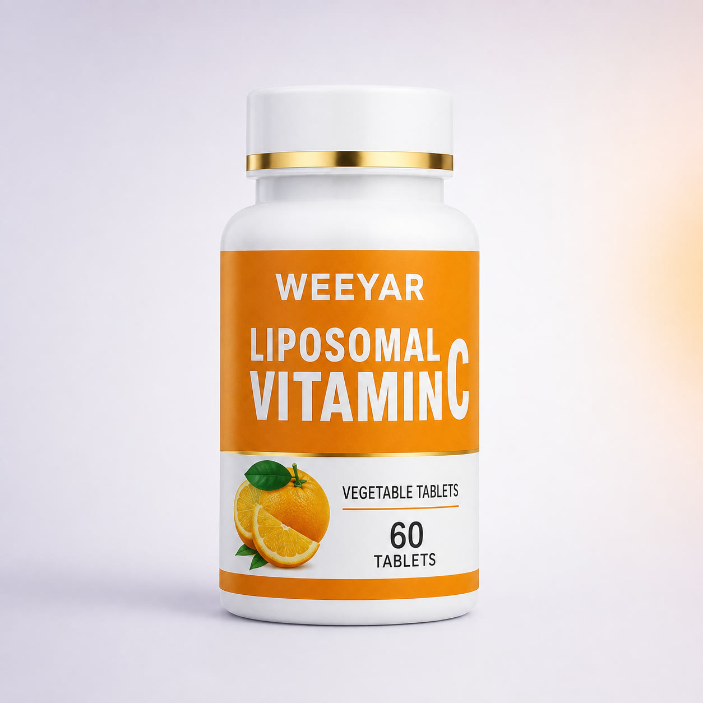

Liposomal Vitamin C Tablets
A tablet-format reference for wholesale, private-label and customized dietary supplement projects.
Product & Cooperation Options
- Tablet-format product sourcing
- Private-label bottle and carton discussion
- Formula, amount and serving details confirmed by project
- Sample and customized project support
Packaging mockup: the image presents a Weeyar-branded packaging concept for B2B project discussion. Current formula, tablet count, ingredient amounts, final packaging, availability, claims and compliance documents are confirmed before quotation.
What Buyers Should Confirm
The words “liposomal” and “vitamin C” do not replace a full product specification. Before ordering, confirm the actual formula, ingredient amounts, serving information and documents for the selected market.
Sample and specification checklist
- Complete ingredient specification and amount per serving
- Tablet size, appearance, taste and tablet count
- Bottle, closure, label area, retail carton and case packing
- Destination-market label, claim and documentation requirements
What determines MOQ and lead time?
MOQ and timing depend on the selected formula, production batch, tablet and bottle specifications, printed packaging quantities and artwork approval. See our supplement MOQ guide.
Send a useful buyer brief
Share the target market, estimated quantity, preferred specification, packaging needs and launch timing. You can also explore our capsule and tablet formats or review the private-label supply process.
Buyer FAQ
Is the packaging shown the final packaging?
No. The image shows a Weeyar packaging mockup for project presentation. Final packaging, specification and availability are confirmed before quotation.
Can the tablet specification and packaging be customized?
Formula route, tablet count, bottle label and retail carton options can be discussed according to project quantity and target market.
Can I request samples?
Yes. Sample availability and timing depend on the selected product specification and packaging route.